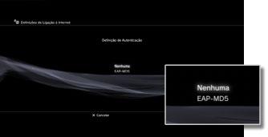
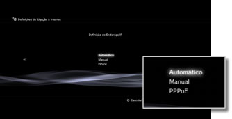
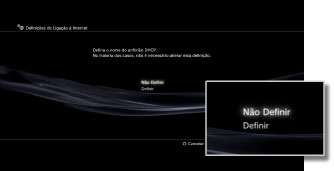
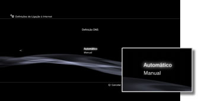
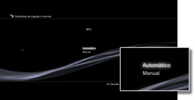
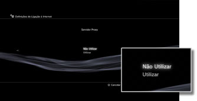
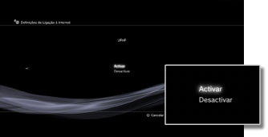

Definições > Definições de Rede > Definições de Ligação à Internet (definições avançadas)
Definições de Ligação à Internet (definições avançadas)
Se não conseguir estabelecer a ligação à Internet com as definições básicas, mude as definições como for necessário. Ajuste cada item como for necessário para o seu ambiente de rede em particular.
1. |
Seleccione |
|---|---|
2. |
Seleccione [Definições de Ligação à Internet]. |
3. |
Seleccione [Personalizado]. |
 (Definições) >
(Definições) >  (Definições de Rede).
(Definições de Rede).Método de Ligação
Para definir o método de ligação à Internet. Esta definição encontra-se disponível apenas nos sistemas PS3™ equipados com a funcionalidade de LAN sem fios.

| Conexão por fios | Para estabelecer uma ligação com fios utilizando um cabo Ethernet |
|---|---|
| Sem fios | Para estabelecer uma ligação sem fios através de uma LAN sem fios |
Definições WLAN
Defina o SSID para o ponto de acesso. Esta definição está apenas disponível nos sistemas PS3™ equipados com a funcionalidade de WLAN.

| Scanear | Pesquisa um ponto de acesso próximo. Seleccione esta definição se não sabe o SSID do ponto de acesso. O sistema irá detectar pontos de acesso próximos e apresentar informação sobre o SSID e as definições de segurança. |
|---|---|
| Introduzir Manualmente | Especifique o ponto de acesso, introduzindo o seu SSID manualmente no teclado. Seleccione esta definição se sabe o SSID. |
| Automático | Usa a funcionalidade das definições automáticas do ponto de acesso. Esta definição está disponível apenas nas regiões em que são vendidos os sistemas PS3™ que suportam esta funcionalidade. Seleccione esta definição quando utilizar um ponto de acesso que suporta uma configuração automática. Siga as instruções no ecrã. |
Definição de Segurança WLAN
Define uma chave de encriptação para um ponto de acesso. Esta definição está apenas disponível nos sistemas PS3™ equipados com a funcionalidade de WLAN.

| Nenhuma | Não define uma chave de encriptação. |
|---|---|
| WEP | Define uma chave de encriptação. A chave de encriptação pode ser introduzida no ecrã seguinte. A chave de encriptação é apresentada como uma série de asteriscos. |
| WPA-PSK / WPA2-PSK |
Definição de Autenticação
Estas definições estão disponíveis apenas nos sistemas PS3™ vendidos na Coreia e nos sistemas PS3™ equipados com a funcionalidade WLAN.

| Nenhuma | Não define informações de autenticação. |
|---|---|
| EAP-MD5 | Define informações de autenticação quando utiliza serviços WLAN públicos. Insira a ID de utilizador e palavra-passe no ecrã seguinte. Para mais detalhes, consulte a informação fornecida pelo fornecedor do serviço WLAN público. |
Modo de Funcionamento por Ethernet
Define a taxa de transferência de dados por Ethernet e o modo de funcionamento. Por regra, selecciona [Detecção Automática].
| Detecção Automática | Define automaticamente as definições básicas. |
|---|---|
| Definições Manuais | Define manualmente a taxa de transferência de dados por Ethernet e o modo de funcionamento. |
Definição de Endereço IP
Define o método de obtenção de um endereço IP quando se liga à Internet.

| Automático | Usa o endereço IP atribuído pelo servidor DHCP. Pode introduzir o nome do anfitrião do servidor DHCP no ecrã seguinte. |
|---|---|
| Manual | Para definir o endereço IP manualmente. Pode introduzir valores para o endereço IP, máscara de sub-rede, router padrão e DNS primário e secundário no ecrã seguinte. |
| PPPoE | Para ligar à Internet utilizando um PPPoE. Pode inserir a ID de utilizador e palavra-passe no ecrã seguinte. |
DHCP
Defina o nome do anfitrião DHCP. Na maioria dos casos, seleccione [Não Definir].

| Não Definir | Não defina o nome do anfitrião DHCP. |
|---|---|
| Definir | Defina o nome do anfitrião DHCP. |
Definição DNS
Define o servidor DNS.

| Automático | Adquire automaticamente o endereço do servidor DNS. |
|---|---|
| Manual | Introduz manualmente o endereço do servidor DNS. |
MTU
Configura o valor MTU usado para transmitir dados. Por regra, seleccione [Automático].

| Automático | Define automaticamente o valor MTU. |
|---|---|
| Manual | Especifica o tamanho máximo dos pacotes de dados (em bytes) que podem ser enviados numa transmissão. |
Servidor Proxy
Define o servidor proxy a ser utilizado.

| Não Utilizar | Não utiliza um servidor proxy. |
|---|---|
| Utilizar | Utiliza um servidor proxy. Pode introduzir o endereço do servidor proxy e o número da porta no ecrã seguinte. |
UPnP
Para activar ou desactivar o UPnP (Universal Plug and Play).

| Activar | Activa o UPnP. |
|---|---|
| Desactivar | Desactiva o UPnP. |
Nota
Se estiver definido para [Desactivar], a comunicação com os outros poderá ser limitada quando utilizar a funcionalidade de conversação de voz / vídeo ou as funcionalidades de comunicação dos jogos.